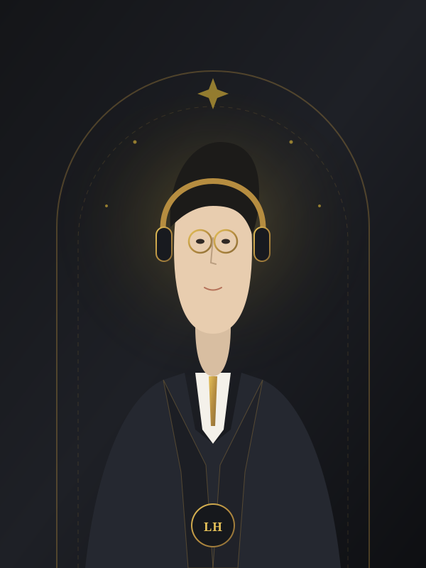
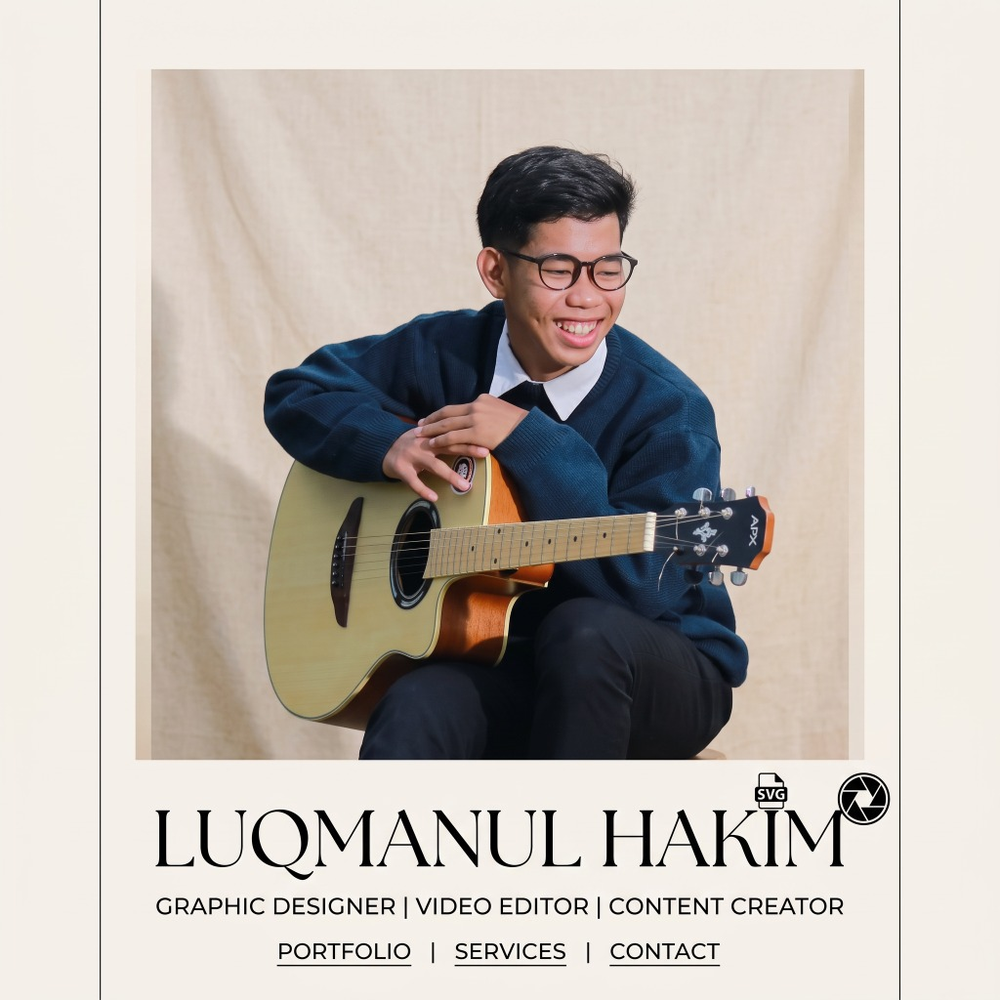
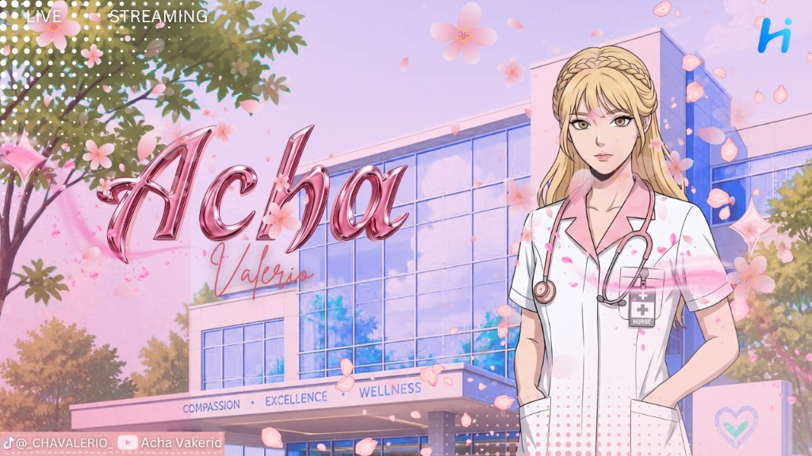
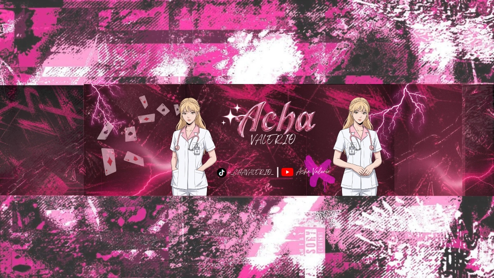
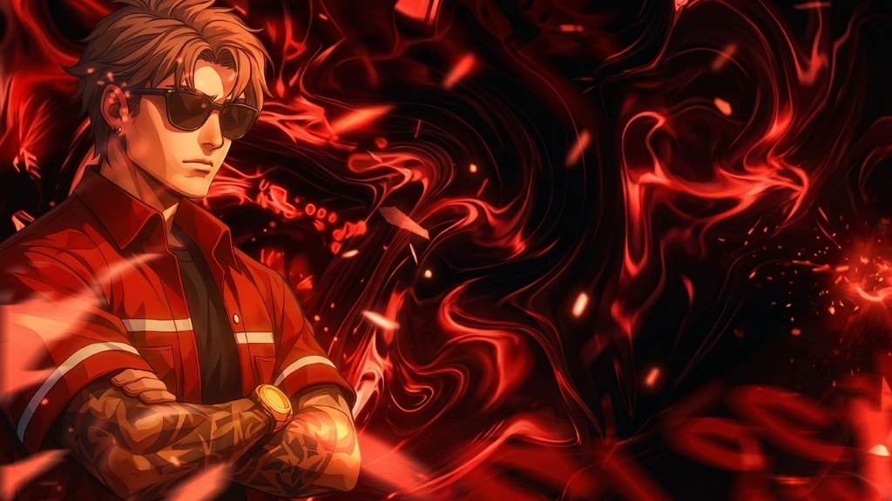
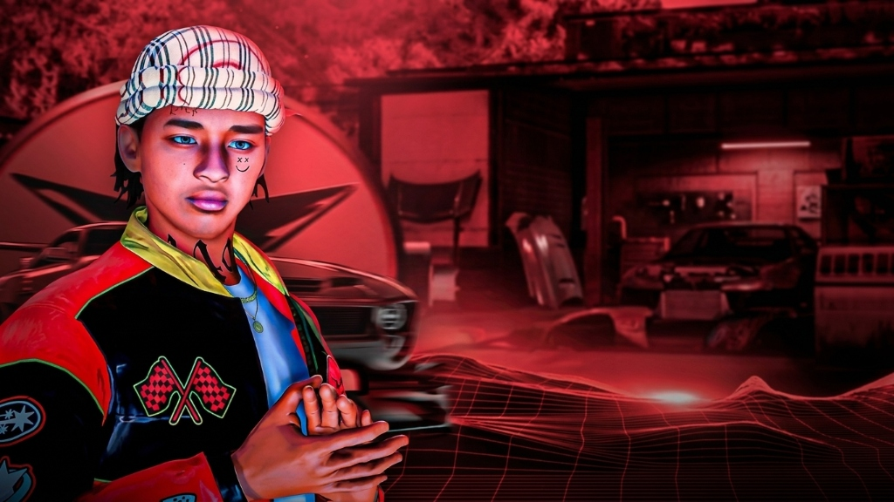

Menghidupkan Cerita Streamer & Karya Visual Berkarakter.
Saya Luqmanul Hakim, seorang Video Editor berfokus pada kreator siaran langsung (Streamer YouTube & TikTok) serta Graphic Designer. Menggabungkan ketepatan content pacing, sound design dinamis, dan grafis berdaya pikat visual tinggi.

Pilar Kreativitas, Dedikasi & Soft Skills
Memadukan ketelitian teknis, sensibilitas ritme video modern, serta ketangguhan mental yang teruji dalam situasi darurat dan kerja sama tim.

Halo! Saya Luqmanul Hakim. Sebagai seorang Video Editor dan Graphic Designer, saya mendedikasikan keahlian visual saya untuk mengolah materi mentah siaran langsung (live stream) yang berdurasi berjam-jam menjadi konten ringkas, padat aksi, menghibur, dan berdaya tonton tinggi di YouTube, TikTok, serta Instagram Reels.
Pengalaman saya di dunia relawan tanggap darurat dan organisasi kampus memperkaya cara saya bekerja: terbiasa berpikir cepat di bawah tekanan, berkomunikasi sigap, menghormati deadline ketat, dan selalu mendahulukan sinergi tim.
4 Pilar Soft Skills Unggulan
Content Pacing
Pengaturan tempo dan ritme potongan video yang terukur agar audiens tidak bosan, menjaga grafik retensi penonton tetap tinggi sejak 3 detik pertama.
Teamwork & Kolaborasi
Membangun komunikasi harmonis dan saling melengkapi dengan kreator, streamer, pengurus organisasi, maupun rekan satu tim produksi.
Response Cepat
Sigap merespons materi siaran langsung yang butuh pemrosesan kilat dan siap tayang saat topik masih hangat dan viral di media sosial.
Manajemen Krisis
Keahlian memecahkan masalah tak terduga dengan kepala dingin, disiplin tinggi, dan solusi efektif yang terasah dari lapangan relawan emergency.
Pengalaman Kerja, Relawan & Pendidikan
Kombinasi pengalaman profesional di dunia konten kreator, dedikasi sosial kemanusiaan, serta latar belakang pendidikan teknik yang analitis.
Pengalaman & Aksi Organisasi
Video Editor untuk Streamer YouTube & TikTok
Membedah footage siaran langsung berjam-jam menjadi konten sorotan (stream highlight) dengan pacing yang memukau, penataan sound design/SFX berlapis, motion subtitle atraktif, dan thumbnail visual berkontras tinggi untuk menaikkan rasio klik.
Relawan Emergency
Berpartisipasi aktif dalam koordinasi lapangan, mitigasi situasi darurat kecelakaan dan kebencanaan, serta menjalin komunikasi tanggap cepat antar tim evakuasi untuk keselamatan warga dan masyarakat luas.
Graphic Designer & Pengelola Media Sosial Kelas
Memegang kendali penuh atas identitas grafis media sosial kelas angkatan: merancang poster kegiatan praktikum, pengumuman akademik, infografis jadwal, serta memelihara arsip kenangan perkuliahan secara konsisten.
Riwayat Pendidikan
Politeknik Negeri Banjarmasin (Poliban)
Menempa pola pikir analitis, ketelitian struktural sistem mekanis mesin, disiplin keselamatan kerja, serta kepemimpinan operasional tim dalam menyelesaikan proyek rekayasa otomotif.
SMA Negeri 1 Kusan Hilir
Mengembangkan dasar logika matematika, pemecahan masalah ilmiah yang sistematis, serta aktif dalam kegiatan ekstrakurikuler organisasi dan kreasi media kreatif sekolah.
Pemahaman logika teknikal dari jurusan teknik mesin dipadukan dengan kreativitas rasa visual dan video editing menjadikan Luqmanul Hakim seorang kreator yang presisi, terorganisir dalam manajemen file, serta tahan banting.
Keahlian Video Editing & Desain Grafis
Penguasaan perangkat lunak industri standar untuk menghasilkan karya video berkualitas tinggi dan identitas desain grafis berdaya pikat.
Video Editing Streamer
Pengolahan video profesional untuk siaran langsung, highlight montage, dan video vertikal TikTok/Shorts.
-
Adobe Premiere Pro
-
Adobe After Effects
-
CapCut Pro (Desktop/Mobile)
-
Alight Motion
Graphic Design Software
Perancangan identitas visual merek, thumbnail YouTube bernilai klik tinggi, poster, dan materi publikasi.
-
Adobe Photoshop
-
Adobe Illustrator
-
Canva Pro
-
CorelDRAW
Stream Production & SFX
Setup live streaming interaktif, integrasi overlay dinamis, sound design, dan manajemen retensi penonton.
-
OBS Studio (Scenes & Overlays)
-
Sound Design & Audio Mix
-
Click-Through Rate (CTR) Tuning
-
Keyframe Motion & Transitions
Portofolio Video Editing & Desain Grafis
Koleksi karya pilihan yang mencerminkan ketepatan content pacing, identitas visual streamer, dan kontribusi nyata dalam komunikasi publik.

Live Stream Starting Screen — "Acha Valerio"
Desain layar siaran langsung anime medis bertema sakura, tipografi 3D chrome berkilau, dan integrasi sosmed TikTok & YouTube.

YouTube Banner Branding — "Acha Valerio"
Header YouTube berkonsep neon grunge pink-black, efek petir magis, kartu bermain, dan tipografi krom 3D berenergi tinggi.
Dark Cyberpunk Character Art — Neon Trail
Manipulasi foto karakter dark gothic berambut perak dengan jejak cahaya neon magenta (light trail curve) dan kabut atmosferik.

Crimson Flame Character Artwork
Karya manipulasi karakter streetwear badass dengan pusaran api merah membara (crimson fire vortex) dan pencahayaan rim-light kuat.

Street Tuner Garage Artwork — Red Cinematic
Komposisi visual bengkel mobil modifikasi underground dengan karakter hypebeast, elemen 3D wireframe grid, dan atmosfer pekat.

Stream Highlights & Shorts TikTok/YouTube
Editing video siaran langsung menjadi highlight ringkas penuh aksi, multi-track sound design SFX, dan subtitle dinamis menjaga retensi.
Siap Meningkatkan Kualitas Konten Anda?
Apakah Anda seorang Streamer yang membutuhkan editor andal, kreator konten TikTok/YouTube, atau butuh desain grafis berkualitas? Hubungi saya hari ini!
Saluran Langsung
Saya siap bekerja secara remote dengan streamer, agensi kreatif, maupun kreator konten individu di seluruh Indonesia.